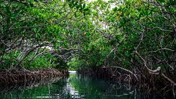
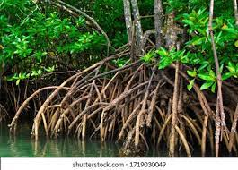
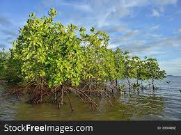

Mangrove Plants |
Mangroves are a major environmental system can be seen in Sri Lanka. |
Created by, |
|
Sections:
|
Mangrove plantsMangroves are defined as assemblages of salt tolerant trees and shrubs that grow in the intertidal regions of the tropical and subtropical coastlines. |
 |
Mangrove InformationMangrove forests serve a critical role by stabilizing shorelands and protecting them from erosion by the constant pounding of waves and tides. The storm buffering capability of the mangrove forests have saved property and countless lives around the world. As sand gathers around the roots, new land is created. Additionally, mangrove forests are home to a vast number of living organisms including crabs, lobsters, snakes, otters, raccoons, hundreds of thousands of bats, a vast variety of fish and bird species, to name just a few. Mangrove plants have several unique adaptations that allow them to survive in harsh environment. Some types filter salt through the roots, and others through glands in the leaves. Others secrete salt into the bark, which the tree eventually sheds. The plants store water in thick, succulent leaves similar to desert plants. A waxy coating minimizes evaporation, and small hairs minimize moisture loss through sunlight and wind. |
 |
Mangrove typesThere are three definitive types of mangrove.
|
 |